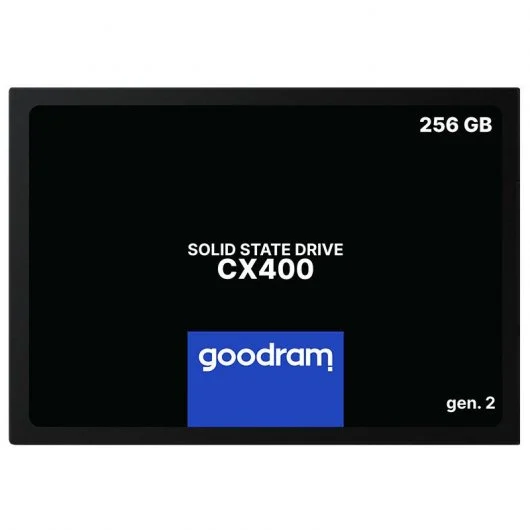
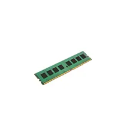
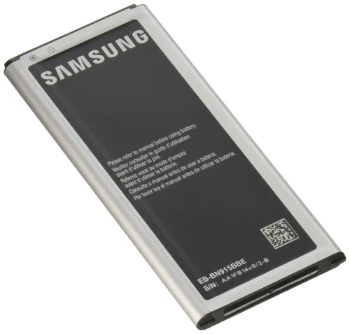
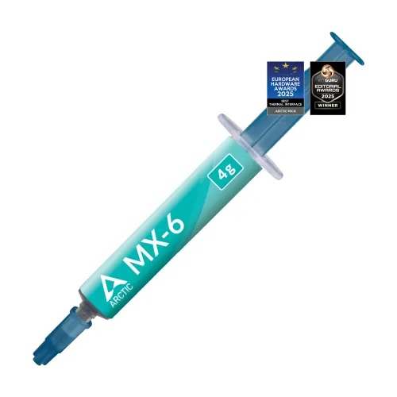
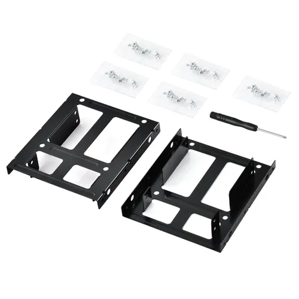

Se ha realizado un diagnóstico inicial sobre 5 equipos del lote, con el fin de evaluar su estado general antes de plantear posibles mejoras de hardware. Para los datos no disponibles del resto del lote, se ha solicitado información a otros grupos a través de sus repositorios, tal como indica la nota del ejercicio.
Cabe destacar que los equipos no disponen de sistema operativo instalado en el momento del diagnóstico.
| Unidad | CPU | RAM | Almacenamiento |
|---|---|---|---|
| Equipo 1 | Intel Core 2 Duo 2.66 GHz | 2 GB DDR2 | HDD Seagate 160 GB |
| Equipo 2 | Intel Core 2 Duo 2.66 GHz | 2 GB DDR2 | HDD Seagate 160 GB |
| Equipo 3 | Intel Core 2 Duo 2.66 GHz | 1 GB DDR2 | HDD Seagate 250 GB |
| Equipo 4 | Intel Core 2 Duo 2.66 GHz | 2 GB DDR2 | HDD Seagate 160 GB |
| Equipo 5 | Intel Core 2 Duo 2.66 GHz | 1 GB DDR2 | HDD Seagate 320 GB |
El lote presenta un estado funcional aceptable a nivel de hardware, pero con limitaciones claras de rendimiento y sin sistema operativo, lo que refuerza la necesidad de plantear mejoras de bajo coste antes de su puesta en servicio.
Identificar mejoras mínimas de hardware que permitan que los equipos del lote sean usables en un centro de mayores (web, correo, videollamadas y ofimática online), respetando los escenarios S0/S1/S2 y un presupuesto muy ajustado.
Capturas guardadas en
../assets/img/30-hw/con URL completa y fecha/hora visibles.
| Categoría | Marca / Modelo | Capacidad | Precio (€) | Tienda | URL | Captura |
|---|---|---|---|---|---|---|
| SSD | KingDian S280 | 120 GB | 14,99 | Amazon ES | https://www.amazon.es/ | |
| SSD | Goodram CX400 | 128 GB | 16,90 | PcComponentes | https://www.pccomponentes.com/ |  |
| Categoría | Marca / Modelo | Capacidad | Frecuencia | Precio (€) | Tienda | URL | Captura |
|---|---|---|---|---|---|---|---|
| RAM | Kingston ValueRAM | 2 GB | DDR2-800 | 8,00 | Wallapop (2ª mano) | https://es.wallapop.com/ |  |
| RAM | Samsung OEM | 2 GB | DDR2-667 | 7,50 | Wallapop (2ª mano) | https://es.wallapop.com/ |  |
| Categoría | Marca / Modelo | Descripción | Precio (€) | Tienda | URL | Captura |
|---|---|---|---|---|---|---|
| Pasta térmica | Arctic MX-4 | Jeringa 4 g | 2,00 | Amazon ES | https://www.amazon.es/ |  |
| Adaptador | 2.5" → 3.5" | Caddy / bandeja metálica | 2,50 | PcComponentes | https://www.pccomponentes.com/ |  |
| Categoría | Marca / Modelo | Descripción | Precio (€) | Tienda | URL | Captura |
|---|---|---|---|---|---|---|
| Wi-Fi USB | TP-Link TL-WN725N | USB 2.0 · 150 Mbps | 6,00 | Amazon ES | https://www.amazon.es/ |
RAM:
La placa HP Compaq 7800 utiliza DDR2 DIMM, con hasta 4 slots y soporte típico de hasta 8 GB. Los módulos propuestos (DDR2-667 / DDR2-800, 1.8 V) son compatibles con el chipset Intel Q35 y procesadores Core 2 Duo.
Fuente: manual y hoja técnica de la placa base (captura incluida).
SSD:
Los equipos disponen de interfaz SATA (SATA II). Los SSD 2.5" SATA son totalmente compatibles y retrocompatibles. Para su instalación se utiliza un adaptador 2.5" → 3.5".
Fuente: especificaciones del fabricante del SSD (captura incluida).
Otros:
El adaptador Wi-Fi USB requiere un puerto USB 2.0 libre, disponible en los equipos analizados. No existen conflictos de espacio ni de alimentación.
HDD → SSD:
Mejora notable en tiempos de arranque y apertura de aplicaciones, pasando de minutos a segundos. Incremento claro de la fluidez general del sistema.
RAM (1–2 GB → 4 GB):
Reducción de bloqueos y uso de memoria virtual. Mejora la multitarea ligera (navegador, correo y videollamadas).
Mantenimiento (pasta térmica / limpieza):
Disminución de temperatura y ruido, mejor estabilidad y mayor vida útil del equipo.
| Escenario | Pieza | Precio (€) | Unidades | Subtotal (€) | Nota |
|---|---|---|---|---|---|
| S1 | SSD 120 GB | 15,00 | 1 | 15,00 | Oferta / 2ª mano |
| S1 | Pasta térmica | 2,00 | 1 | 2,00 | Tubo compartido |
| S1 | Adaptador 2.5" → 3.5" | 2,50 | 1 | 2,50 | Necesario para montaje |
| Total HW | 19,50 € | Dentro del presupuesto |
El Total HW se trasladará a
75-plan_presupuesto_hw_y_roi.mdpara el cálculo de costes y ROI.
Selección orientada a uso sencillo en un centro de mayores.
Capturas del proceso guardadas en
../assets/img/30-postinstalacion/.
| Plataforma | Enlace | Captura | Precio (€) | Especificación | Fecha/Hora |
|---|---|---|---|---|---|
| Wallapop — Mini PC Gigabyte 8GB + SSD 120GB | https://www.wallapop.com/item/vendo-mini-pc-gigabyte-8gb-ram-ddr4-ssd-120gb-1118458395 :contentReference[oaicite:0]{index=0} | img/pc01.png | 95 | Mini PC con 8 GB RAM y 120 GB SSD | Últimas semanas |
| Wallapop — Mini PC N100 8GB RAM + 128GB SSD | https://uk.wallapop.com/item/mini-pc-n100-8gb-ram-128gb-ssd-plata-1192688594 :contentReference[oaicite:1]{index=1} | img/pc02.png | 80 | Mini PC con 8 GB RAM y 128 GB SSD | Últimos días |
| Wallapop — Mini PC Gigabyte 8GB + SSD 240GB | https://www.wallapop.com/item/mini-pc-gigabyte-cpu-intel-8gb-ram-ssd-240gb-1116122412 :contentReference[oaicite:2]{index=2} | img/pc03.png | 105 | Mini PC con 8 GB RAM y 240 GB SSD | Último mes |
Los comparables seleccionados son equipos usados con mínimo 8 GB de memoria y almacenamiento SSD, funcionales para usos de Internet y ofimática ligera.
Media precios comparables:
(95 € + 80 € + 105 €) / 3 ≈ 93,33 €
PVP objetivo:
≈ 75 € (puede ajustarse según estado y mejoras incluidas).
Este PVP objetivo sitúa al equipo reacondicionado por debajo de la media del mercado de segunda mano, aumentando su competitividad para clientes interesados en PCs básicos con SSD y RAM suficiente para tareas web y ofimática ligera.
::contentReference[oaicite:3]{index=3}
| Escenario | Gasto HW (€) | Horas | Tarifa (€/h) | Coste total (€) | PVP objetivo (€) | ROI | ¿Competitivo? |
|---|---|---|---|---|---|---|---|
| S0 | 0,00 | 0,5 | 10 | 25,00 | 40,00 | 0,60 | Sí |
| S1 | 19,50 | 1 | 10 | 49,50 | 75,00 | 0,52 | Sí |
| S2 | 30,00 | 1,5 | 10 | 65,00 | 95,00 | 0,46 | Sí |
Se selecciona S1 como escenario final, ya que ofrece un equilibrio óptimo entre coste, mejoras de rendimiento y competitividad.